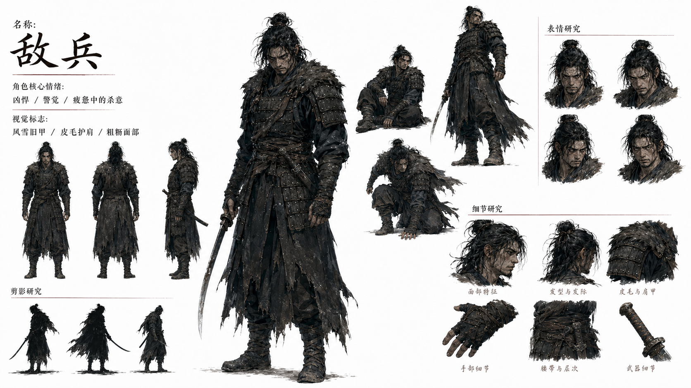
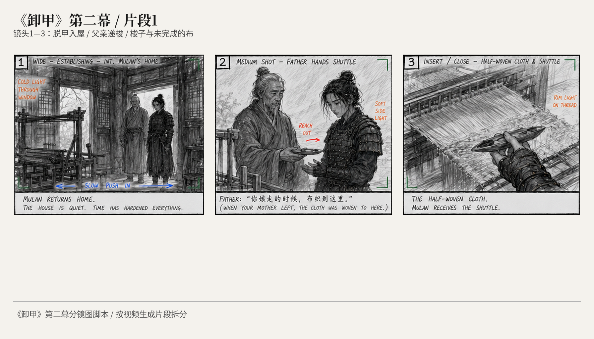
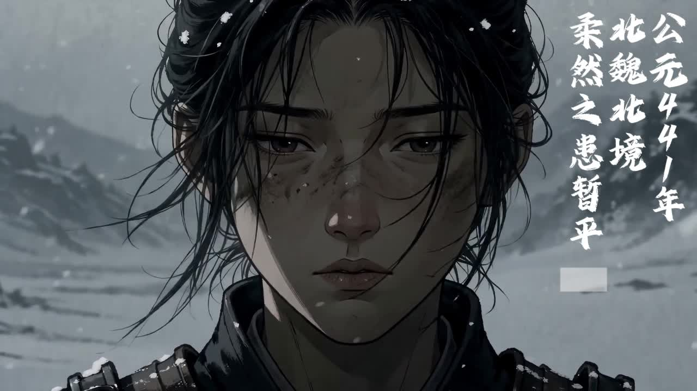
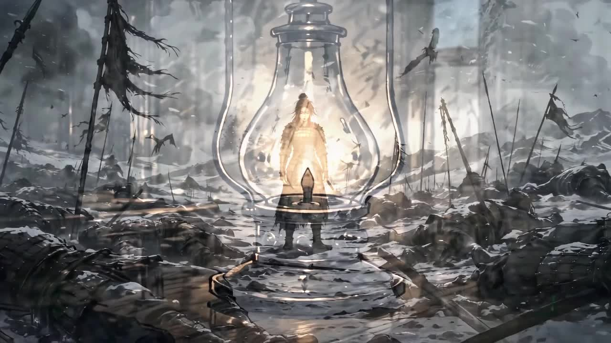
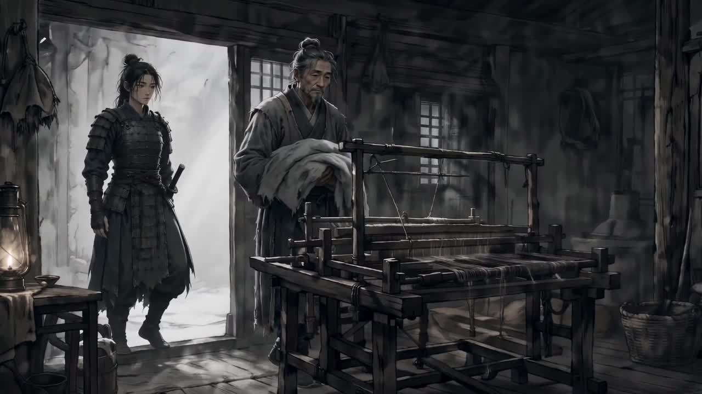
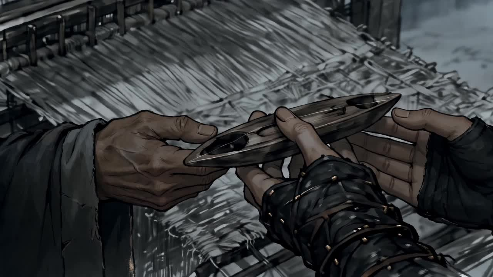
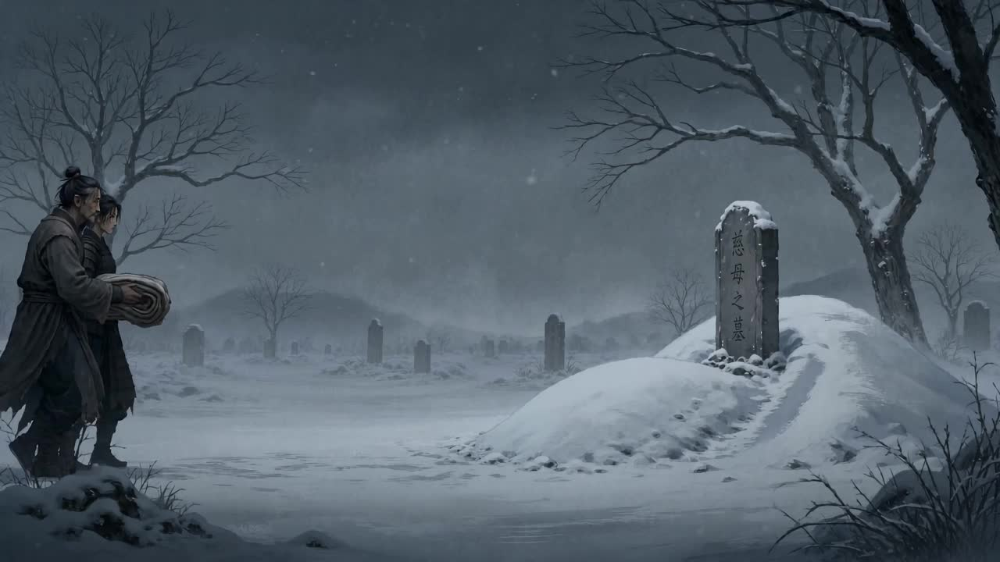

U N A R M O R E D
AIGC 叙事动画短片 · 2′34″





战争结束后，木兰回到故乡。身体已经回家，记忆仍停留在战场。
本片以冷灰水墨与木刻质感的统一视觉语言，通过返乡、旧衣、织机、墓地等意象，讨论"如何带着伤口重新生活"。全片极少台词，以人物情绪与生活细节代替宏大战争场面，在克制中完成叙事。
作品为《影视短片制作》课程成果，使用 AIGC 工具完成从角色设定、分镜设计到画面生成与剪辑包装的全流程创作。


创作工具链
《影视短片制作》课程作品
创意策划 · 视觉风格 · 分镜设计 · AIGC 生成 · 剪辑包装
潘奕冰 · 2026